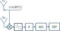
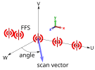
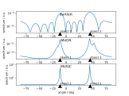
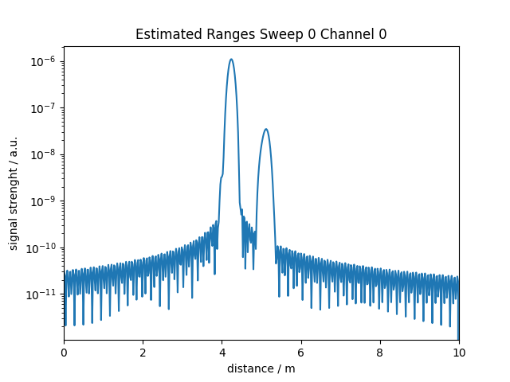
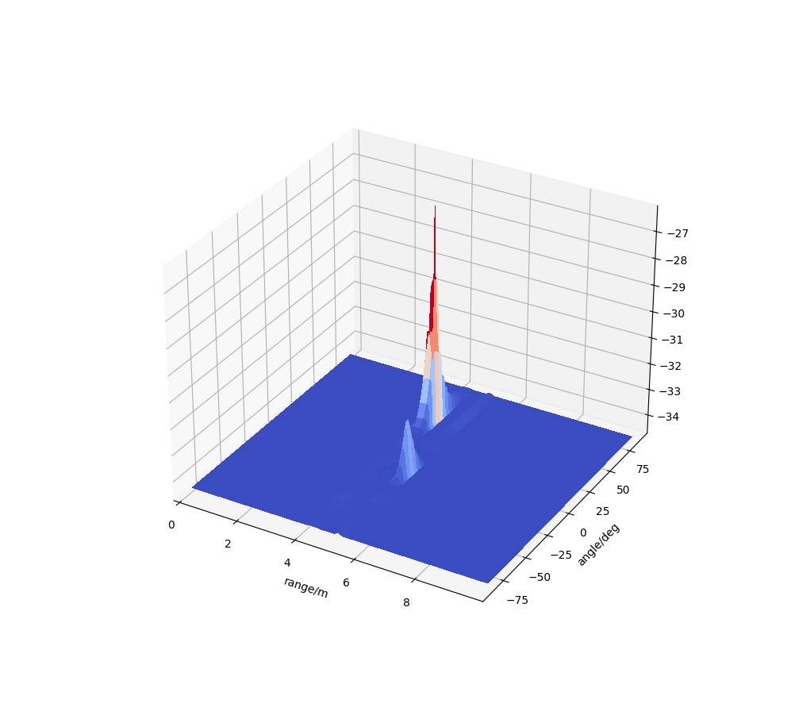
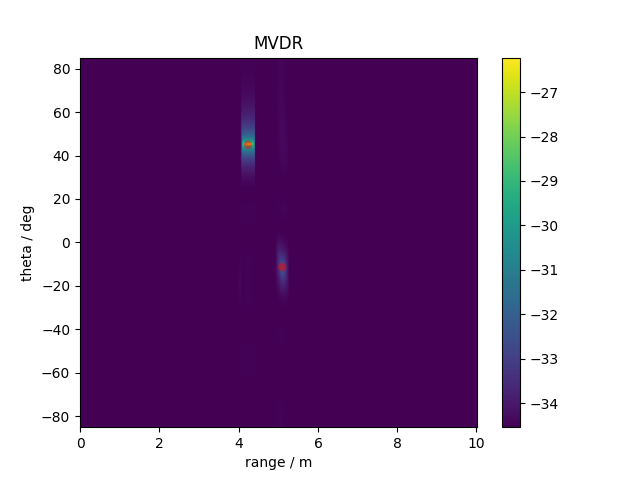
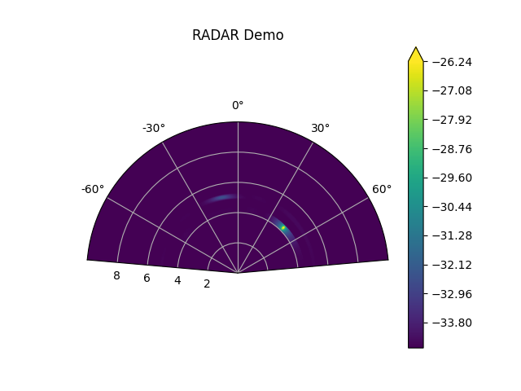
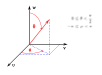
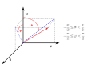
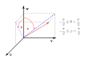

cst.radar package¶
Topics¶
General Notes¶
This package provides functionalities to extract range and angle data as perceived by an automotive RADAR sensor from Studio simulations. Furthermore, plotting routines for conveniently calculating 2d range-angle maps are provided.
Note
To use this package please install the modules scipy (tested version: 1.5.4), numpy (tested version: 1.19.5) and matplotlib (tested version: 3.3.4) in your Python environment.
For the calculation of ranges two RADAR models are provided: A simple impulse based RADAR model and a linear FMCW-RADAR model. For a MIMO RADAR it is also possible to calculate angles based on phase differences between different channels of the MIMO RADAR. Finally, the range and angle calculation can be combined to a range-angle calculation for a MIMO RADAR.
Theory of RADAR Models¶
The package provides two idealized basic RADAR models, an impulse based RADAR model and a linear FMCW-RADAR model.
The impulse based RADAR model consists of a smoothed Dirac impulse that the RADAR Tx antennas are sending, which is then received by the Rx antennas. Hence, the distance of an object is simply estimated by the run time of transmitting and receiving the impulse.
Another RADAR model is provided by the linear FMCW-RADAR model. The following schematic drawing explains the idealized model:
{kind=link}

FMCW RADAR Model¶
The model is defined by the following parameters:
The linear chirp characterized by \(s(t)=cos(2\pi [f_0 t + \frac{f1 - f0}{2 T_c}t^2])\) for \(t \in [-\frac{T}{2},\frac{T}{2}]\)
Lower frequency \(f_0\)
Upper frequency \(f_1\)
Rise time \(T_c\)
Model for mixer
Real
Complex mixer (complex baseband architecture)
Cufoff frequency ideal low pass \(f_c\)
Sampling rate of analog-to-digital converter \(f_s=1/T_s\)
In this model a linear chirp signal is sent by the Tx antenna, at the Rx antenna the received signal is mixed with the sent chirp signal and an idealized low-pass filter is applied. The intermediate frequency signal is extracted and an analog-to-digital converter provides a signal amenable to the digital signal processing. The distance is calculated by a Fourier transform of the signal after the DSP converter.
Note
The idealized RADAR models neglect any multiplexing details that in reality are required in order to separate on the receiver side from which sender the received signal originated. This is possible as in the simulation the respective transmitter and receiver for each F-parameter is known. Furthermore, the amplifiers at the sender and receiver side are neglected in the models as well. A final note regarding the mixer and low pass model: The analytical formulation for the mixer already is rejecting the higher sideband and directly gives the low sideband signal. This low sideband signal is fed into the low pass filter and the output is the intermediate frequency signal (IF). The analog-to-digital converter then transforms the IF signal into the discrete samples.
Theory of Angle Detection¶
In case of a MIMO RADAR the direction of arrival is calculated by the estimated covariance matrix
\(\hat{\bf{R}} = \frac{1}{N}\sum_{i=1}^N \bf{X}_i \bf{X}_i^H\)
with
\(\hat{\bf{R}} \in \mathbb{C}^{k \times k}\) estimated covariance matrix
\(k\) number of MIMO RADAR channels
\(N\) number of snapshots (simulations)
\(\bf{X}_i \in \mathbb{C}^k\) snapshot of channel vector
\(i\) snapshot (simulation) index
The estimated covariance matrix is calculated from snapshots of the moving objects by performing N simulations. Hence, as a consequence of this method it is necessary to setup a parametrized simulation where the objects are moving in order to ensure uncorrelated signals between snapshots and avoid a singular estimated covariance matrix.
- Currently the package provides angle-of-arrival estimation algorithms based on beamforming:
Bartlett [Bartlett48]
MVDR (Minimum Variance Distortion less Response) [Capone69]
MUSIC (Multiple Signal Classification) [Schmid86]
A more detailed overview regarding the physical signal models and the listed methods for angle of arrival can be found in [Krim96].
Note
The maximum number of objects that can be detected by the described methods for a given covariance matrix is limited by the number of channels \(k\) by \(k - 1\). Moreover, in order to ensure a non-singular estimate of the covariance matrix, at least \(k\) snapshots (simulations) are required.
The output of each algorithm is a pseudo-spectrum obtained from scanning along predefined directions where the detection of an object is associated to the local maximas of the pseudo-spectrum. For an unambiguous definition of the scanning direction the package provides appropriate coordinate systems. The coordinate system has to be specified by the user such that the scanning is conducted in the correct direction. The following figure shows a linear antenna array of far field sources (FFS) and an appropriately defined local coordinate system for scanning:
{kind=link}

Scanning of the covariance matrix along a direction. Coordinate system is aligned with the sensor.¶
Therefore, the correct interpretation of any angle calculated by the algorithms depends on the specified coordinate system for scanning.
References
Bartlett, M.S.: Smoothing Periodograms from Time-Series with Continuous Spectra. In: Nature, vol. 161, 1948, pp. 686–687
Capon, J.: High-resolution frequency-wavenumber spectrum analysis. In: Proceedings of the IEEE, vol. 57, no. 8, 1969, pp. 1408-1418
Schmidt, R.: Multiple emitter location and signal parameter estimation. In: IEEE Trans. Antennas Propag., no. 34, 1986, pp. 276–280
Krim, H. and Viberg M.: Two decades of array signal processing research: the parametric approach. In: IEEE Signal Processing Magazine, vol. 13, no. 4, 1996, pp. 67-94
Examples¶
The first example demonstrates the calculation of the direction of arrival only. The covariance matrix is calculated directly from the F parameters without any specific RADAR model. This method is suitable to give a brief first impression of the performance of the MIMO RADAR with minimal simulation time. In the simulation the motion of two corner reflectors is a rotation around their respective center of mass. Hence, the snapshots are the F-parameters for different rotation angles of the corner reflector. The accuracy of the angle-of-arrival estimation depends on the chosen algorithms, which is shown in the following plot:
{kind=link}

Performance of different detection algorithms.¶
The plot is created by the following script:
from pathlib import Path
import pickle
import numpy as np
import matplotlib.pyplot as plt
from cst.radar.physical_constants import c0, freqHz_to_k0
from cst.radar.spectral_algorithms import MVDRAlgorithm, MUSICAlgorithm, BartlettAlgorithm
from cst.radar.spectral_algorithms import create_virtual_antenna_matrix, assemble_covariancematrix_single_frequency
from cst.radar.coordinate_systems import SensorCoordinateSystem1
from cst.radar.channel_tensor import ChannelTensor
from cst.radar.channel_tensor import get_antenna_positions_from_model
def annotate_corner_positions(ax, sensor_coordinate_system, ypos):
"""Mark the center of mass of the corner reflectors in the plot"""
corner_pos1 = np.array([-1, 0, 5])
theta1, phi1, _ = sensor_coordinate_system.get_theta_phi_r(corner_pos1)
corner_pos2 = np.array([3, 0.00400, 3])
theta2, phi2, _ = sensor_coordinate_system.get_theta_phi_r(corner_pos2)
ax.annotate('object 1',
xy=(np.rad2deg(theta1), ypos),
xytext=(np.rad2deg(theta1), ypos),
arrowprops=dict(facecolor='black', shrink=0.05))
ax.annotate('object 2',
xy=(np.rad2deg(theta2), ypos),
xytext=(np.rad2deg(theta2), ypos),
arrowprops=dict(facecolor='black', shrink=0.05))
def angles_from_single_frequency():
"""Demonstrate how to calculate the angles from a simulation with a single frequency
or a small number of frequencies that are not sufficient to calculate a range as
well. This approach give an idea about the optimal RADAR performance at a specific
frequency.
"""
#
# Create a channel tensor from the simulation
#
use_pickled_data = True
if use_pickled_data:
# load precalculated data from pickled data
model_dir = Path(__file__).parent
data_file = model_dir / Path('data') / Path('rotating_corner_reflectors_angles_only.pkl')
channel_tensor = ChannelTensor.from_pickle_file(data_file)
# specify transmitter names and positions
tx_dict = {'Tx1': np.array([0., 0., 0.]),
'Tx2': np.array([0.00197368, 0., 0.])}
# specify receiver names and positions
rx_dict = {'Rx1': np.array([0.00592105, 0., 0.]),
'Rx2': np.array([0.00986842, 0., 0.]),
'Rx3': np.array([0.01381579, 0., 0.]),
'Rx4': np.array([0.01776316, 0., 0.]),
'Rx5': np.array([0.02171053, 0., 0.]),
'Rx6': np.array([0.02565789, 0., 0.])}
else:
# load the data from a CST simulation
model_dir = Path(r'.')
cst_file_name = model_dir / r'rotating_corner_reflectors_angles_only.cst'
txs = ['Tx1', 'Tx2'] # names transmitter FFS in model
rxs = ['Rx1', 'Rx2', 'Rx3', 'Rx4', 'Rx5', 'Rx6'] # names receiver FFS in model
channel_tensor = ChannelTensor.from_cst_file(cst_file_name, txs, rxs)
# In the model the positions are defined as parameters and we can retrieve them
# in this case automatically.
tx_dict, rx_dict = get_antenna_positions_from_model(cst_file_name, rxs, txs)
#
# Calculate a covariance matrix from channel tensor from a single frequency
# in order to judge the RADAR MIMO setup performance for angle detection
#
Rhat = assemble_covariancematrix_single_frequency(channel_tensor, ifreq=0)
#
# Use covariance matrix to determine angle
#
# first define the correct scan coordinate system for the MIMO array
# in the model. In this specific case the FFS are located on the x-axis.
Origin = np.array([0, 0, 0])
Uhat = np.array([1, 0, 0])
Vhat = np.array([0, 1, 0])
What = np.array([0, 0, 1])
sensor_coordinate_system = SensorCoordinateSystem1(Uhat, Vhat, What, Origin)
# than setup the MVDR algorithm
f0design = 77e+9 # array spacing in model is designed for this frequency
lambda0 = c0/f0design
channel_dict = channel_tensor.get_channel_dict() # connection channel number with Tx/Rx pair
virtual_array_positions = create_virtual_antenna_matrix(tx_dict, rx_dict, channel_dict, scale=1)
print('virtual array positions in term of design wavelength \n {}'.format(np.real(virtual_array_positions)/lambda0))
k0 = freqHz_to_k0*f0design
FoV = np.deg2rad(np.array([-85, 85])) # set field of view
# Apply Bartlett algorithm
algorithm = BartlettAlgorithm(kind="theta",
vmin=FoV[0],
vmax=FoV[1],
nsamples=360,
virtual_array_positions=virtual_array_positions,
k0=k0,
second_dim_angle=0,
coordinate_system=sensor_coordinate_system)
pseudo_spectrum = algorithm.execute(Rhat)
angle = algorithm.get_scan_vars_degree()
# Plot results
fig, (ax1, ax2, ax3) = plt.subplots(3)
ax1.plot(angle, np.abs(pseudo_spectrum))
ax1.set_title('Bartlett', y=1, pad=-14)
ax1.set(xlabel='angle / deg', ylabel='spectrum / a.u.', yscale='log')
annotate_corner_positions(ax1, sensor_coordinate_system, ypos=np.amin(np.abs(pseudo_spectrum)))
# Apply MVDR algorithm
algorithm = MVDRAlgorithm(kind="theta",
vmin=FoV[0],
vmax=FoV[1],
nsamples=360,
virtual_array_positions=virtual_array_positions,
k0=k0,
second_dim_angle=0,
coordinate_system=sensor_coordinate_system)
algorithm.set_sigma_regularization_factor(1e-20) # good choice is crucial for accurate results
pseudo_spectrum = algorithm.execute(Rhat)
angle = algorithm.get_scan_vars_degree()
# Plot results
ax2.plot(angle, np.abs(pseudo_spectrum))
ax2.set_title('MVDR', y=1, pad=-14)
ax2.set(xlabel='angle / deg', ylabel='spectrum / a.u.', yscale='log')
annotate_corner_positions(ax2, sensor_coordinate_system, ypos=np.amin(np.abs(pseudo_spectrum)))
# Apply MUSIC algorithm
# note that for MUSIC the number of objects have to be specified in advance
algorithm = MUSICAlgorithm(kind="theta",
vmin=FoV[0],
vmax=FoV[1],
nsamples=360,
virtual_array_positions=virtual_array_positions,
k0=k0,
second_dim_angle=0,
coordinate_system=sensor_coordinate_system,
number_objects=2)
pseudo_spectrum = algorithm.execute(Rhat)
# Plot results
angle = algorithm.get_scan_vars_degree()
ax3.plot(angle, np.abs(pseudo_spectrum))
ax3.set_title('MUSIC', y=1, pad=-14)
ax3.set(xlabel='angle / deg', ylabel='spectrum / a.u.', yscale='log')
# Mark exact object positions
annotate_corner_positions(ax3, sensor_coordinate_system, ypos=np.amin(np.abs(pseudo_spectrum)))
# Now plot everything
plt.show()
def main():
angles_from_single_frequency()
if __name__ == '__main__':
main()
In the second example the range-angle map is created from the pulsed RADAR model. The first graph shows the radial distance estimated from the first channel and from the first snapshot of the RADAR:
{kind=link}

Range estimation.¶
In the second graph the range-angle map is calculated considering all channels and all snapshots of the MIMO RADAR:
{kind=link}

Terrain plot of obtained range-angle map.¶
Next, marking the exact position of the objects by red discs, the intensity map is drawn:
{kind=link}

Range angle plot with exact target positions marked as red discs.¶
The final graph shows the same intensity map in a RADAR plot:
{kind=link}

Performance of different detection algorithms.¶
All range angle plots are created by the following script:
"""A simple example showing how to calculate the range and angle of two corner reflectors from an
asymptotic solver simulation.
"""
import numpy as np
import matplotlib.pyplot as plt
from pathlib import Path
from cst.radar.channel_tensor import get_antenna_positions_from_model, ChannelTensor
from cst.radar.coordinate_systems import SphericalCoordinateSystem, SensorCoordinateSystem1
from cst.radar.spectral_algorithms import BartlettAlgorithm, MVDRAlgorithm, MUSICAlgorithm, create_virtual_antenna_matrix
from cst.radar.range_angle import angle_range_map, angle_range_map_limited_range
from cst.radar.range import range_map_from_channeltensor_pulsed_radar
from cst.radar.physical_constants import c0, freqHz_to_k0
import cst.radar.plot as tls
def generate_target_list_from_exact_positions(sensor_coordinate_system):
""" Calcualte the desired target positions from the center of mass
of the analyically known corner reflector position in the sensor
coordinate system
"""
corner_reflector_1 = np.array([-1, 0, 5])
corner_reflector_2 = np.array([3, 0, 3])
corner_list = [corner_reflector_1, corner_reflector_2]
target_list_range = []
target_list_angle = []
for corner_pos in corner_list:
theta, _, r = sensor_coordinate_system.get_theta_phi_r(corner_pos)
r_meter = r
theta_deg = np.rad2deg(theta)
target_list_range.append(r_meter)
target_list_angle.append(theta_deg)
return (target_list_range, target_list_angle)
def calculate_range_angle_map():
use_pickled_data = True
if use_pickled_data:
# load precalculated data from pickled data
model_dir = Path(__file__).parent
data_file = model_dir / Path('data') / Path('corner_reflectors_range_angle.pkl')
channel_tensor = ChannelTensor.from_pickle_file(data_file)
# specify transmitter names and positions manually
tx_dict = {'Tx1': np.array([0., 0., 0.]),
'Tx2': np.array([0.00197368, 0., 0.])}
# specify receiver names and positions
rx_dict = {'Rx1': np.array([0.00592105, 0., 0.]),
'Rx2': np.array([0.00986842, 0., 0.]),
'Rx3': np.array([0.01381579, 0., 0.])}
else:
# load the parametric F-parameters of the simulation and organize them in the `ChannelTensor`
model_dir = Path(r'./')
cst_file_name = model_dir / r'corner_reflectors_range_angle.cst'
txs = ['Tx1', 'Tx2'] # specify the name of the transmitter FFS
rxs = ['Rx1', 'Rx2', 'Rx3'] # specify the name of the receiver FFS
channel_tensor = ChannelTensor.from_cst_file(cst_file_name, txs, rxs)
# load the antenna positions from Parameter file
# specify those manually when you have not parametrized the source position
tx_dict, rx_dict = get_antenna_positions_from_model(cst_file_name, rxs, txs)
# calculate the range_tensor from this data assuming a pulsed RADAR signal
range_axis_vals, range_tensor = range_map_from_channeltensor_pulsed_radar(channel_tensor,
max_range=10,
Nbins=1024,
window_order=8,
window_amplitude_correction=True
)
# for the first parameter sweep and channel number 0 plot the range map
plt.plot(range_axis_vals, np.abs(range_tensor[0, 0, :]))
plt.yscale('log')
plt.xlim(0, 10)
plt.title('Pulsed RADAR - Estimated Ranges Sweep 0 Channel 0')
plt.xlabel('distance / m')
plt.ylabel('signal strenght / a.u.')
plt.show()
# organize the virtual array positions and order them according to the channel dictionary
channel_dict = channel_tensor.get_channel_dict()
virtual_array_positions = create_virtual_antenna_matrix(tx_dict, rx_dict, channel_dict, scale=1)
#
f0design = 76e+9 # reference frequency for angle of arrival algorithm
k0 = freqHz_to_k0*f0design
FoV = np.deg2rad(np.array([-85, 85])) # field of view settings
# specify sensor scan coordiante system
Uhat = np.array([1, 0, 0])
Vhat = np.array([0, 1, 0])
What = np.array([0, 0, 1])
origin = np.array([0.00592105, 0, 0])
sensor_coordinate_system = SensorCoordinateSystem1(Uhat, Vhat, What, origin)
# setup the angle of arrival detection algorithm
mvdr_algorithm = MVDRAlgorithm(kind="theta",
vmin=FoV[0],
vmax=FoV[1],
nsamples=720,
virtual_array_positions=virtual_array_positions,
k0=k0,
second_dim_angle=0,
coordinate_system=sensor_coordinate_system)
mvdr_algorithm.set_sigma_regularization_factor(1e-15) # loading factor for the covariance matrix
# run the mvdr_algorithm over each range bin
new_range, Zz = angle_range_map_limited_range(mvdr_algorithm, range_tensor, range_axis_vals, max_range=10)
angle = mvdr_algorithm.get_scan_vars_degree()
# visualize the resulting range-angle map
X, Y = np.meshgrid(new_range, angle)
Z = np.log(np.abs(Zz))
tls.visualize_map3d(X, Y, Z, xlabel='range/m', ylabel='angle/deg')
plt.pcolormesh(X, Y, Z)
plt.xlabel(r'range / m')
plt.ylabel(r'theta / deg')
plt.title('Pulsed RADAR - MVDR')
plt.colorbar()
target_list_range, target_list_angle = generate_target_list_from_exact_positions(sensor_coordinate_system)
plt.scatter(target_list_range, target_list_angle, color='r', alpha=0.5, edgecolors='none', marker='o')
plt.show()
tls.visualize_map_polar(np.array(new_range), angle, np.log(np.abs(Zz)), angle_in_deg=True)
def main():
calculate_range_angle_map()
if __name__ == '__main__':
main()
Module Contents¶
cst.radar.channel_tensor¶
This module provides a convenient way of representing F/S parameters from a simulation in a compact form. The ChannelTensor object is created from simulation data and facilitates a convenient data representation. Several methods to extract data from a CST Asymptotic solver simulation are provided.
- class ChannelTensor(channel_dict={}, run_id_dict={}, frequencies=[], tensor=None, number_of_channels=0, number_of_frequencies=0, number_of_snapshots=0, all_run_id_parameter_combinations=[])¶
F-parameter data tensor (snapshot,channel,frequency) and related quanties
- bare f-parameter data tensor: array(complex) tensor rank 3
indicies are (snapshot,channel,frequency)
- run_id_dict: dict(int,int)
maps snapshot number to run id
- channel_dict: dict(int,(str,str))
maps channel number to Tx/Rx pairs
- frequencies: array(float)
solver frequencies corresponding to frequency index
- get_tensor()¶
get bare f-parameter data tensor, indicies are (snapshot,channel,frequency)
- get_frequencies()¶
frequencies in Hz
- get_number_of_channels()¶
number of channels = number Tx* number Rx antennas
- get_number_of_frequencies()¶
number of simulated frequencies
- get_number_of_snapshots()¶
number of snapshots from parameter sweep
- get_run_id_dict()¶
dictionary mapping the snapshot number to the solver run id
- get_channel_dict()¶
dictionary mapping the channel number to the Tx/Rx pair name
- get_time_data(time_sweep_parameter_name)¶
list of time instances from specified parameter name
- serialize_to_pickle_file(filename)¶
Serialize the channel tensor to file by Python pickle module.
- classmethod from_pickle_file(filename)¶
Deserialize the channel tensor from file by Python pickle module.
- classmethod from_cst_result3d(result3d, txs, rxs, skip_nonparametric=True, broad_band_result=False, include_run_ids=[])¶
create channel tensor from cst project
- Parameters:
file_name (str) – name of cst file including file extension
txs (list(str)) – list of active transmitter names in cst model
rxs (list(str)) – list of relevant receiver names in cst model
- classmethod from_cst_file(file_name, txs, rxs, skip_nonparametric=True, broad_band_result=False, include_run_ids=[])¶
create channel tensor from cst project from file my_fancy_project.cst
- Parameters:
file_name (str) – name of cst file including file extension
txs (list(str)) – list of active transmitter names in cst model
rxs (list(str)) – list of relevant receiver names in cst model
- get_antenna_positions_from_model(model_file_name, rxs, txs)¶
retrieve antenna position from the ‘Parameters.json’ file of the model
- Parameters:
model_file_name (str) – path to cst model file
rxs (list(str)) – list of Rx antenna names
txs (list(str)) – list of Tx antenna names
- Returns:
rx_dict : dict(str,array(3)) antenna name and position vector tx_dict : dict(str,array(3)) antenna name and position vector
- Return type:
tuple(rx_dict, tx_dict)
cst.radar.spectral_algorithms¶
This module contains the one-dimensional (pseudo) spectral angle-of-arrival finding algorithms and some helper routines.
- create_virtual_antenna_matrix(tx_dict, rx_dict, channel_dict, scale=1)¶
Create matrix of virtual antenna array positions consistent with the enumeration of the channels in the channel tensor.
- Parameters:
tx_dict (dict(str,np.array(3))) – Dictionary mapping antenna names to antenna positions
rx_dict (dict(str,np.array(3))) – Dictionary mapping antenna names to antenna positions
channel_dict (dict((str,str),int)) – Dictionary mapping the pair of Rx/Tx name to the channel number as obtained from the channel tensor
scale (float) – Scale the resulting positions to take possible units into account
- Returns:
antenna_matrix – Height = 3, Width = number channels the column vectors are the virtual antenna position for a specific channel
- Return type:
float array
- assemble_covariancematrix_single_frequency(channel_tensor, ifreq=0)¶
Calculate the covariance matrix for a single frequency of the channel tensor
- Parameters:
channel_tensor (class ChannelTensor) – Channel tensor object from a simulation
ifreq (int) – Frequency index
- Returns:
Rhat – covariance matrix estimated from channel tensor
- Return type:
np.array((2, 2), float)
- class MUSICAlgorithm(kind, vmin, vmax, nsamples, virtual_array_positions, k0, second_dim_angle, number_objects, threshhold=0, coordinate_system=<cst.radar.coordinate_systems.SphericalCoordinateSystem object>)¶
Implemetation of MUSIC spectral algorithm in order to determine pseudo spectrum of objects’ locations by calculating spectra using a sub-space method.
- Parameters:
kind (string) – “theta” or “phi”
vmin (float) – minimal scan angle in rad
vmax (float) – maximal scan angle in rad
nsamples (int) – number of angles
virtual_array_positions (2Darray(float)) – position vectors of virtual array consistent with setup used for calculation of correlation matrix
k0 (float) – base frequency for RADAR
second_dim_angle (float) – value of second angle of line along which scan is conducted. This angle is kept constant during the scan.
number_objects (int) – number of objects the algorithm shall detect
coordinate_system (Coordinate system object) – Coordinate system used for definition of scan angles.
- compile()¶
Compile scan angles and scan directions according to the specified information in construcor.
- execute_loop_svd(Rhat)¶
loop version for debugging and verification - SVD based
- execute_loop(Rhat)¶
loop version for debugging and verification
- execute_vectorized(Rhat)¶
vectorized version for performance
cst.radar.coordinate_systems¶
This module provides 3d coordinate systems to describe the sensor orientation and the respective scan directions for MIMO RADARs. The coordinate systems have to be specified in order to determinte the scan direction for the angle of arrival algorithms.
- class CoordinateSystem¶
- get_unit_vector(theta: float, phi: float) Type[numpy.typing.NDArray.numpy.float64]¶
Returns unit vector corresponding to parametrization in spherical coordinate system.
- Parameters:
theta (float) – Theta coordinate of vector in spherical coordinate system
phi (float) – Phi coordinate of vector in spherical coordinate system
- Returns:
vec – unit vector
- Return type:
array(float)
- get_vector(theta: float, phi: float, r: float) Type[numpy.typing.NDArray.numpy.float64]¶
Returns cartesian vector corresponding to parametrization in spherical coordinate system.
- Parameters:
theta (float) – Theta coordinate of vector in spherical coordinate system
phi (float) – Phi coordinate of vector in spherical coordinate system
r (float) – Radial coordinate of vector in spherical coordinate system
- Returns:
vec – Input vector reparametrized in cartesian coordinates of underlying orthonormal coordinate system ([Uhat, Vhat, What]).
- Return type:
array(float)
- get_unit_vector_component(i: int, theta: float, phi: float) float¶
Returns i-th cartesian component of vector given in the Elevation-over-Azimuth coordinate system representation by (theta_x, theta_y, r)
- Parameters:
i (int) – index of component that should be returned
theta (float) – theta vector component in Elevation-over-Azimuth coordinate system representation
phi (float) – phi vector component in Elevation-over-Azimuth coordinate system representation
- Returns:
i-th cartesian component of vector
- Return type:
float
- get_theta_phi_r(vec3: Type[numpy.typing.NDArray.numpy.float64], phi_0_to_2pi: bool = False)¶
Returns the spherical coordinates of a cartesian vector.
- Parameters:
vec3 (array(float)) – Cartesian vector
phi_0_to_2pi (bool) – measuring phi angle from [0,2pi) else [-pi,pi]
- Returns:
Local coordinates (theta, phi, r) of vector vec3
- Return type:
tuple
- class SphericalCoordinateSystem(Uhat=numpy.array, Vhat=numpy.array, What=numpy.array, origin=numpy.array)¶
Implementation of a spherical coordinate system with orthonormal axis vectors Uhat, Vhat and What. Angle “Theta” is defined as the inverse cosine between position vector and What-axis, angle “Phi” is defined in plane perpendicular to What-axis.

Spherical coordinate systems¶
- Parameters:
Uhat (array(float)) – first dimension basis vector
Uhat – second dimension basis vector
Uhat – third dimension basis vector
origin (array(float)) – vector of origin of coordinate system with respect to standard coordinate systen
- get_unit_vector(theta, phi)¶
Returns unit vector corresponding to parametrization in spherical coordinate system.
- Parameters:
theta (float) – Theta coordinate of vector in spherical coordinate system
phi (float) – Phi coordinate of vector in spherical coordinate system
- Returns:
vec – unit vector
- Return type:
array(float)
- get_vector(theta, phi, r)¶
Returns cartesian vector corresponding to parametrization in spherical coordinate system.
- Parameters:
theta (float) – Theta coordinate of vector in spherical coordinate system
phi (float) – Phi coordinate of vector in spherical coordinate system
r (float) – Radial coordinate of vector in spherical coordinate system
- Returns:
vec – Input vector reparametrized in cartesian coordinates of underlying orthonormal coordinate system ([Uhat, Vhat, What]).
- Return type:
array(float)
- get_unit_vector_component(i, theta, phi)¶
Returns i-th cartesian component of the unit vector given in the spherical coordinate system representation by (theta, phi)
- Parameters:
i (int) – index of component that should be returned
theta (array(float)) – array of theta angles
phi (array(float)) – array of phi angles
- Returns:
vector of i-th component
- Return type:
array(float)
- get_theta_phi_r(vec3, phi_0_to_2pi=False)¶
Returns the spherical coordinates of a cartesian vector.
- Parameters:
vec3 (array(float)) – Cartesian vector
phi_0_to_2pi (bool) – measuring phi angle from [0,2pi) else [-pi,pi]
- Returns:
Local coordinates (theta, phi, r) of vector vec3
- Return type:
tuple
{kind=link}
- class ElOverAzCoordinateSystem(Uhat=numpy.array, Vhat=numpy.array, What=numpy.array, origin=numpy.array)¶
Elevation-over-Azimuth coordinate system in which the pole is not located along the z-axis but along the y-axis. Theta angle is defined as the arcsin(v/r). Mind that in the drawing the angle is displayed in the v-w-plane , however, it should not be confused as being being defined in this plane. Unlike in the case of the sensor coordinate system, where the angles are defined in the respective planes, in the Elevation-Over-Azimuth Coordinate System, points of equal angles of Theta will lie along a spherical arc around the coordinate origin. Phi angle is defined as the arctan(u/w).

Elevation-over-Azimuth coordinate systems¶
- Parameters:
Uhat (array(float)) – first dimension basis vector
Uhat – second dimension basis vector
Uhat – third dimension basis vector
origin (array(float)) – vector of origin of coordinate system with respect to global cartesian coordinate system
- get_unit_vector(theta, phi)¶
Returns cartesian vector corresponding to parametrization in Elevation-over-Azimuth coordinate system.
- Parameters:
theta (float) – Theta coordinate of vector in Elevation-over-Azimuth coordinate system
phi (float) – Phi coordinate of vector in Elevation-over-Azimuth coordinate system
- Returns:
vec – Input vector reparametrized in cartesian coordinates of underlying orthonormal coordinate system ([Uhat, Vhat, What]).
- Return type:
array(float)
- get_vector(theta, phi, r)¶
Returns cartesian vector corresponding to parametrization in Elevation-over-Azimuth coordinate system.
- Parameters:
theta (float) – Theta coordinate of vector in Elevation-over-Azimuth coordinate system
phi (float) – Phi coordinate of vector in Elevation-over-Azimuth coordinate system
r (float) – Radial coordinate of vector in Elevation-over-Azimuth coordinate system
- Returns:
vec – Input vector reparametrized in cartesian coordinates of underlying orthonormal coordinate system ([Uhat, Vhat, What]).
- Return type:
array(float)
- get_unit_vector_component(i, theta, phi)¶
Returns i-th cartesian component of vector given in the Elevation-over-Azimuth coordinate system representation by (theta_x, theta_y, r)
- Parameters:
i (int) – index of component that should be returned
theta (float) – theta vector component in Elevation-over-Azimuth coordinate system representation
phi (float) – phi vector component in Elevation-over-Azimuth coordinate system representation
- Returns:
i-th cartesian component of vector
- Return type:
float
- get_theta_phi_r(vec3)¶
Returns the ElOverAzCoordinateSystem coordinates of a cartesian vector.
- Parameters:
vec3 (array(float)) – Cartesian vector
- Returns:
Local coordinates (El, Az, r) of vector vec3
- Return type:
tuple
{kind=link}
- class SensorCoordinateSystem1(Uhat=numpy.array, Vhat=numpy.array, What=numpy.array, origin=numpy.array)¶
Sensor-Centric Coordinate System in which the antennas extend in the U-V-plane, hence the look ahead normal is located along the W-axis. Theta angle is defined as arctan(u/w) in the projection into the U-W-plane. Phi angle is defined as arctan(v/w) in the projection into the V-W-plane.

Sensor coordinate system.¶
- Parameters:
Uhat (array(float)) – first dimension basis vector
Uhat – second dimension basis vector
Uhat – third dimension basis vector
origin (array(float)) – vector of origin of coordinate system with respect to standard coordinate system
- get_unit_vector(theta, phi)¶
Return cartesian vector corresponding to parametrization in Sensor coordinate system.
- Parameters:
theta (float) – Theta coordinate of vector in Sensor coordinate system
phi (float) – Phi coordinate of vector in Sensor coordinate system
r (float) – Radial coordinate of vector in Sensor coordinate system
- Returns:
vec – Input vector reparametrized in cartesian coordinates of underlying orthonormal coordinate system ([Uhat, Vhat, What]).
- Return type:
array(float)
- get_vector(theta, phi, r)¶
Return cartesian vector corresponding to parametrization in Sensor coordinate system.
- Parameters:
theta (float) – Theta coordinate of vector in Sensor coordinate system
phi (float) – Phi coordinate of vector in Sensor coordinate system
r (float) – Radial coordinate of vector in Sensor coordinate system
- Returns:
vec – Input vector reparametrized in cartesian coordinates of underlying orthonormal coordinate system ([Uhat, Vhat, What]).
- Return type:
array(float)
- get_unit_vector_component(i, theta, phi)¶
Returns i-th cartesian component of vector given in the sensor coordinate system representation by (theta, phi, r)
- Parameters:
i (int) – Index of component that should be returned
theta (float) – Theta vector component in sensor coordinate system representation
phi (float) – Phi vector component in sensor coordinate system representation
r (float) – Radial vector component in sensor coordinate system representation
- Returns:
i-th cartesian component of vector
- Return type:
float
- get_theta_phi_r(vec3)¶
Returns the SensorCoordinateSystem1 coordinates of a cartesian vector.
- Parameters:
vec3 (array(float)) – Cartesian vector
- Returns:
Local coordinates (theta, phi, r) of vector vec3
- Return type:
tuple
{kind=link}
- rotate_vector_3d(u, axis, angle)¶
Rotate 3d vector u around axis with angle in counterclockwise direction
- rotate_coordinate_system(coordinate_system, axis, angle, rotate_origin=False)¶
Rotate the U, V, W vectors of a coordinate system and optionally the origin
cst.radar.range¶
This module contains algorithms for calculating the range map.
- apply_range_transformation(channel_tensor, range_transformation)¶
transform the frequency dimension of the channel_tensor into a range dimension
- Parameters:
channel_tensor (ChannelTensor object) – channel tensor carrying the information and correlatons of the received signal
range_transformation (callable object, function) – performs the 1d range transformation
- Returns:
tuple – first array contains range axis, second array contains range tensor[isweep, ichannel, irange]
- Return type:
(array, 3D array)
- range_map_pulsed_radar(frequencies, Fpara, max_range, min_range=0, Nbins=256, window_order=16, Noversample=5, amplitude_correction=False)¶
calculate the range map for a given set of F-parameters by an windowed impulse
- Parameters:
frequencies (array(float)) – frequencies for F-parameters, expect a homogeneous spacing
Fparameters (array(complex)) – F-parameters, same order as frequencies
max_range (float > 0) – maximum range
min_range (float > 0 and min_range < max_range) – minimum range
Nbins (int > 0) – number of range bins
window_order (int >= 0) – order of Kaiser filter
Noversample (int >= 1) – zero padding the F-parameter frequency data as [Noversample*len(Fpara),Fpara,Noversample*len(Fpara)]
- Returns:
tuple – first array contains range axis, second array contains information to fill range tensor for specific sweep and specific channel
- Return type:
(array, array)
- range_map_from_channeltensor_pulsed_radar(channel_tensor, max_range, min_range=0, Nbins=256, window_order=16, Noversample=5, amplitude_correction=False)¶
transform the frequency dimension of the channel_tensor into a range dimension
- Parameters:
channel_tensor (ChannelTensor object) – channel tensor carrying the information and correlatons of the received signal
max_range (float > 0) – maximum range
min_range (float > 0 and min_range < max_range) – minimum range
Nbins (int > 0) – number of range bins
window_order (int >= 0) – order of Kaiser filter
Noversample (int >= 1) – zero padding the F-parameter frequency data as [Noversample*len(Fpara),Fpara,Noversample*len(Fpara)]
- Returns:
tuple – first array contains range axis, second array contains range tensor[isweep, ichannel, irange]
- Return type:
(array, 3D array)
- compute_analog_digital_converter(t, y, adc_t0, adc_t1, adc_dt, kind='linear')¶
simple analog to digtial converter model for time samples using interpolation to calculate ADC signal
- Parameters:
t (array(float)) – time axis data to sample by adc
y (array(complex)) – signal to sample by adc
adc_t0 (float) – start time adc
adc_t1 (float) – end time adc
kind (categorical str) – linear, quadratic, cubic
- Returns:
tuple ((t_adc, y_adc))
t_adc (array(float)) – time axis adc
y_adc – sampled signal
- range_map_from_channeltensor_fmcw_radar(channel_tensor, fmcw_radar, window_type='kaiser', window_order=16, Noversample=5, raw_output=False, oversample_type='zeropadding', dumpFparaDataDir='', amplitude_correction=False)¶
transform the frequency dimension of the channel_tensor into a range dimension
- Parameters:
channel_tensor (ChannelTensor object) – channel tensor carrying the information and correlatons of the received signal
fmcw_radar (FMCWRadar) – fmcw radar model parameters
Noversample (int >= 1) – zero padding the F-parameter frequency data as [Noversample*len(Fpara),Fpara,Noversample*len(Fpara)]
- Returns:
tuple – first array contains range axis, second array contains range tensor[isweep, ichannel, irange]
- Return type:
(array, 3D array)
- range_map_from_channeltensor_fmcw_radar_legacy(radar, channel_tensor, filter={}, debug=False)¶
transform the frequency dimension of the channel_tensor into a range dimension
- Parameters:
radar (radar object) – radar object containing setup used for data generation as well as relevant parameters
channel_tensor (ChannelTensor object) – channel tensor containing correlation information between the signals received at antennas
- Returns:
range_axis_vals (array(float)) – new nodes of range axis obtaining throgh transformation from frequency axis
range_tensor (3D-array(complex)) – new channel tensor with transformed range domain instead of frequency domain
- range_map_from_channeltensor_fmcw_radar_legacy_v2(radar, channel_tensor, filter={}, debug=False)¶
transform the frequency dimension of the channel_tensor into a range dimension
- Parameters:
radar (radar object) – radar object containing setup used for data generation as well as relevant parameters
channel_tensor (ChannelTensor object) – channel tensor containing correlation information between the signals received at antennas
- Returns:
range_axis_vals (array(float)) – new nodes of range axis obtaining throgh transformation from frequency axis
range_tensor (3D-array(complex)) – new channel tensor with transformed range domain instead of frequency domain
- if_signal_fmcw_radar_chirp_cpugpu(frequencies, H, f0c, f1c, Tc, adc_dt, adc_t0=None, adc_nbins=None, f_IF_cutoff=numpy.finfo.max, complex_mixer=True, plot_intermediate_results=False)¶
Calculates the ADC sampled IF signal
- Parameters:
frequencies (array(float)) – transfer function frequencies > 0, sorted in ascending order in Hz
H (array(complex)) – transfer function for positive spectrum
f0c (float) – chirp lowest frequency
f1c (float) – chirp highest frequency
Tc (float) – chirp rise time
adc_dt (float) – analog to digital converter sampling time step
adc_t0 (float) – start time adc sampling
adc_nbins (int > 0) – number of sampling bins
f_IF_cutoff (float) – ideal low pass cut off frequency in Hz
complex_mixer (bool) – mixer architecture
Out (tuple(array(float), array(complex))) – t time yif_t sampled IF signal at time t
- range_map_from_channeltensor_fmcw_radar_new(channel_tensor, fmcw_radar, nbins, if_signal_window=None)¶
transform the frequency dimension of the channel_tensor into a range dimension
- Parameters:
channel_tensor (ChannelTensor object) – channel tensor carrying the information and correlatons of the received signal
fmcw_radar (FMCWRadar) – fmcw radar model parameters
- Returns:
tuple – first array contains range axis, second array contains range tensor[isweep, ichannel, irange]
- Return type:
(array, 3D array)
cst.radar.range_angle¶
This module contains the relevant functions to execute the angle of arrival algorithms based on covariance matrices and the range tensor.
- angle_range_map(algorithm, range_tensor, sigma=1e-22)¶
Method which executes the spectral algorithm on each range bin given in the range tensor. The resulting tensor represents a 2D map of the range-angle distribution of the targets.
- Parameters:
algorithm (SpectralAlgorithm object) – SpectralAlgorithm object (carrying specifications and parameters) that is used to calculate the (pseudo) spectrum of the angular position of the targets
range_tensor (3D array(complex float)) – Range tensor obtained from range tensor calculations, used as input to algorithm
sigma (float) – Diagonal loading factor for covariance matrix preventing singularities
- Returns:
Tensor containing information on targets’ angular and range locations
- Return type:
2D array
- angle_range_map_limited_range(algorithm, range_tensor, arange, max_range=10, sigma=1e-22)¶
Method which executes the spectral algorithm on each range bin given in the range tensor up to the maximum range specified as a parameter. The resulting tensor represents a 2D map of the range-angle distribution of the targets.
- Parameters:
algorithm (SpectralAlgorithm object) – SpectralAlgorithm object (carrying specifications and parameters) that is used to calculate the likelihood of the angular position of the targets
range_tensor (3D array(complex float)) – Range tensor obtained from range tensor calculations, used as input to algorithm
max_range (float) – maximum range up to which the range bins should be considered
sigma (float) – Diagonal loading factor for covariance matrix preventing singularities
- Returns:
tuple – First entry contains new range axis after cutting the range information for ranges higher than max_range. Second entry is tensor containing information on targets’ angular and range locations.
- Return type:
(array, 2D array)
- angle_range_map_limited_range_single_snapshot(algorithm, range_tensor, arange, max_range=10, isnapshot=0)¶
Method which executes the spectral algorithm on each range bin given in the range tensor up to the maximum range specified as a parameter. The resulting tensor represents a 2D map of the range-angle distribution of the targets.
- Parameters:
algorithm (SpectralAlgorithm object) – SpectralAlgorithm object (carrying specifications and parameters) that is used to calculate the likelihood of the angular position of the targets
range_tensor (3D array(complex float)) – Range tensor obtained from range tensor calculations, used as input to algorithm
max_range (float) – maximum range up to which the range bins should be considered
sigma (float) – Diagonal loading factor for covariance matrix preventing singularities
- Returns:
tuple – First entry contains new range axis after cutting the range information for ranges higher than max_range. Second entry is tensor containing information on targets’ angular and range locations.
- Return type:
(array, 2D array)
- velocity_angle_range_map_limited_range_single_snapshot(algorithm, range_tensor, arange, max_range=None, isnapshot=0)¶
Method which executes the spectral algorithm on each range bin given in the range tensor up to the maximum range specified as a parameter. The resulting tensor represents a 2D map of the range-angle distribution of the targets.
- Parameters:
algorithm (SpectralAlgorithm object) – SpectralAlgorithm object (carrying specifications and parameters) that is used to calculate the likelihood of the angular position of the targets
range_tensor (3D array(complex float)) – Range tensor obtained from range tensor calculations, used as input to algorithm
max_range (float) – maximum range up to which the range bins should be considered
sigma (float) – Diagonal loading factor for covariance matrix preventing singularities
- Returns:
tuple – First entry contains new range axis after cutting the range information for ranges higher than max_range. Second entry is tensor containing information on targets’ angular and range locations.
- Return type:
(array, 2D array)
cst.radar.plot¶
This module contains routines for plotting range-angle and range-doppler maps.
- visualize_map(X, Y, Z, xname='range m', yname='velocity m/s', log_scale=False)¶
Plot 2D heat map of spectrum returned by radar post-processing algorithm (i.e MVDR, MUSICS etc.)
- Parameters:
X (array(float)) – grid positions along first axis
Y (array(float)) – grid positions along second axis
Z (2D array(float)) – output of radar algorithm on two-dimensional scan grid
xname (string) – label on x-axis
yname (string) – label on y-axis
log_scale (bool) – Choose if log-scale should be used in plot. Log scale used if “True”, linear scale if “False”
- visualize_map3d(X, Y, Z, xlabel='range', ylabel='angle', showPlotImmediately=True)¶
Plot 3D surface plot of spectrum returned by radar post-processing algorithm (i.e MVDR, MUSICS etc.)
- Parameters:
X (array(float)) – grid positions along first axis
Y (array(float)) – grid positions along second axis
Z (2D array(float)) – output of radar algorithm on two-dimensional scan grid
- map3d(X, Y, Z)¶
Returns plt and axis for 3D surface plot of spectrum returned by radar post-processing algorithm (i.e MVDR, MUSICS etc.)
- Parameters:
X (array(float)) – grid positions along first axis
Y (array(float)) – grid positions along second axis
Z (2D array(float)) – output of radar algorithm on two-dimensional scan grid
- visualize_map_polar(ranges, angles, values, angle_in_deg=True)¶
Plot 2D heat map of spectrum returned by radar post-processing algorithm (i.e MVDR, MUSICS etc.)
- Parameters:
ranges (array(float)) – grid positions along radial axis
angles (array(float)) – grid positions along angle axis in radians
values (2D array(float)) – output of radar algorithm on two-dimensional scan grid
angle_in_deg (bool) – Choose if angle should be displayed in degrees pr in radians in plot. Degrees used if “True”, radians if “False”